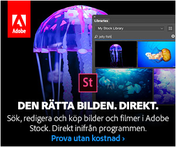

<link rel="import" href="../../bower_components/polymer/polymer.html">

<dom-module id="gota-contentad">
  <!-- Defines the element's style and local DOM -->
  <template>
    <style>
      :host {
        width:300px;
        display:block;
        margin-bottom:16px;
      }

      :host img{display:block;max-width:100%;}
      
    </style>
    
  </template>
  <!-- Creates the element's prototype and registers it -->
  <script>
    Polymer({
      is: 'gota-contentad'
    });
  </script>
</dom-module>